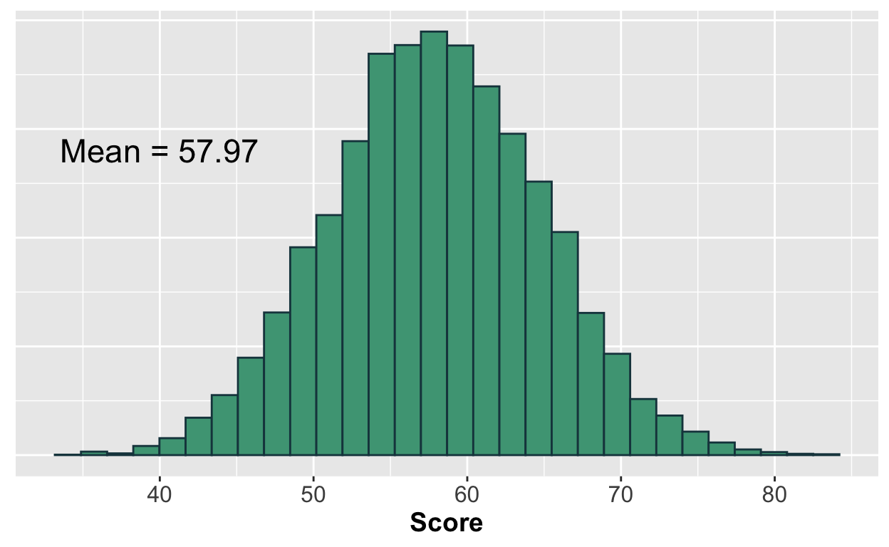
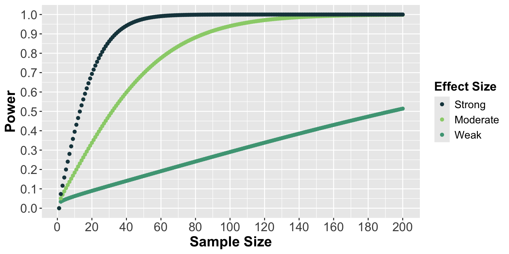
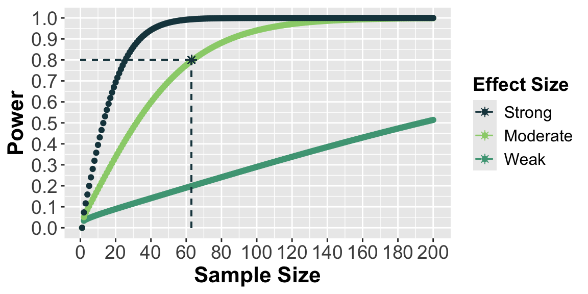
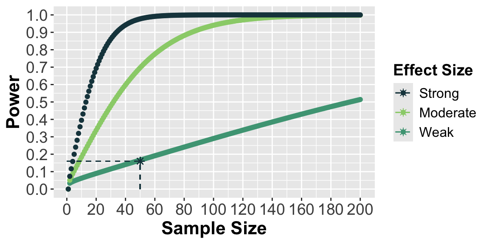

Intro to Today’s Lab
During today’s lab, you’ll apply the concepts discussed during this week’s lecture. You’ll also review a few concepts from last week’s lecture. Each lab consists of a range of tasks, with corresponding questions you can answer. Please note that the questions are not required and not marked, although they do provide a helpful source of formative feedback that will help you gauge your understanding.
Today, you’ll be using interactive visualisations to demonstrate the concepts covered in the lecture. You will not be using SPSS.
Learning Objectives
At the end of this lab, you will be able to:
- Understand the link between probability and inferential statistics
- Describe the difference between effect sizes and \(p\)-values
- Compute confidence intervals
- Describe general requirements of a power analysis
Computing the Area Under the Curve
Recall from the lecture that the total area under the curve (AUC) allows us to compute the probability of an observation falling within a given range. Use the plot below to visualise how the AUC corresponds to different proportions of observations in a normal distribution.
Now that you’ve started to get a grasp on what the area under the curve corresponds to, let’s apply this to the example from last week. Recall that you had a small sample of students who completed each of the three assessments. The optimal assessment was determined to be Assessment C. Imagine that the instructor adopted Assessment C for use in their course. The plot below reflects the probability distribution of assessment performance across all students on the course.
The Null Distribution
When we run an inferential statistical test, it produces a test statistic. The null distribution for that test is the distribution of test statistics we would expect if the null hypothesis were true. If we run a statistical test and our statistic falls in the extreme region of the distribution, we consider our results to be significant and reject the null hypothesis (because our results would be really unusual if the null hypothesis were true!). See the lecture if you need a refresher.
Before running a test, we use \(\alpha\) to determine our cutoff for significance. \(\alpha\) refers to the proportion of values in the null distribution we consider to be extreme. In the plot below, the shaded region indicates the ‘extreme’ region associated with each value of \(\alpha\).
Computing p
Recall from the lecture that a \(p\)-value is the probability of obtaining a statistical test result at least as extreme as ours, given that the null hypothesis is true. Keep in mind that we’re interested in the probability of any value at least as extreme as our value, regardless of whether it is positive or negative. This means that the \(p\)-value is calculated by summing the probability of scores more extreme than our value on both sides of the distribution.
The plot below shows the probability of each shaded region, as well as a line representing the test statistic value. Use this plot to answer the following questions.
Putting it all Together
In the last few tasks, we’ve broken down the general steps of an inferential statistical test. This gives you a glimpse of what’s going on under the hood of SPSS. Now, let’s put the steps together.
Use the plot below to answer the following questions. The shaded area reflects \(p\), the probability of getting a test statistic at least as extreme as yours given the null is true.
Please note that in the previous sections, \(P\) (capital) reflected the probability of scores within each region. Here, \(p\) (lowercase) refers to the \(p\)-value (the total probability of both shaded regions).
Interpreting Effect Sizes
Although a \(p\)-value provides you with evidence of whether the null hypothesis can be rejected, it doesn’t provide information about the strength of the effect being tested. Even weak relationships may be significant under certain circumstances. Significance does not guarantee an effect is meaningful. To get a better sense of this, we use effect size. Use the plot below to explore the relationships between means, standard deviations, effect size, sample size, and the \(p\)-value. While you interact with the plot, consider the following:
How does changing the difference between means affect the effect size? The \(p\)-value?
How does changing the standard deviation affect the effect size? The \(p\)-value?
How does changing the sample size affect the effect size? The \(p\)-value?
Please note that due to the way the data are simulated, there will not be a perfect negative or positive relationship between these values. It’s more important that you grasp the general trend in their relationship than note the specific values being produced. The answers to the quiz questions will reflect this.
Compute a 95% Confidence Interval
Recall from the lecture that a 95% confidence level indicates that, were we to collect 100 samples and compute 95% confidence intervals each time, ~95 of those confidence intervals would be expected to contain the true population value.
Here, we’ll perform a simulation to illustrate this idea.
Let’s think back to our instructor, who adapted Assessment C for use in their course. The instructor would like to know the average score for all students who have ever taken and will ever take the course. Although that’s not possible, they can estimate this value by giving their current students the assessment and inspecting the average score.
We often cannot know the true population parameter, but for the purposes of illustration, let’s imagine that we have access to the performance of all past/present/future students who take this instructors course, and it looks something like this:

To demonstrate what the confidence interval tells us, we need to take multiple samples from the population and calculate a confidence interval from each. Given what a 95% confidence interval is telling us, if we were to take 20 samples of 50 students on the course and compute a confidence interval with each, we would expect around 19 (95%) of those confidence intervals to include a value of 57.97.
Use the button to generate 20 new samples. In the plot, the points represent the mean of each sample, and the error bars show the 95% confidence intervals. The true population mean is represented by the black line. Red error bars indicate confidence intervals that do not include the true population mean. If you were to press the button many times, eventually you would find that, on average, 95% of the confidence intervals contain the true population mean of 57.97.
You’ll also note that while each sample’s mean falls near the true population value, it is rare for a sample mean to perfectly capture the population mean. Confidence intervals are useful because our CI is more likely than the sample mean to capture the population mean.
Power Analyses
An a priori power analysis should be conducted when designing the study in order to determine the number of participants needed to detect the effect of interest. To run an a priori power analysis, you will need (at minimum) a power threshold, an alpha value, and an estimated effect size.
In this course, we’ll be using WebPower to conduct our power analyses. We’ll begin to conduct power analyses when we run specific statistical tests. Today, we’ll focus on improving your understanding of the concept of statistical power. Have a look at the following power curves and spend some time trying to interpret them.

As you interpret this plot, try to answer the following questions:
What is the effect of sample size on power?
What is the effect of effect size on power?
About how many participants are necessary to detect a moderate effect with 80% power?
If you expect a weak effect but have only 50 participants, what is your likelihood of making a Type II error?
Click here for a hint
β: the likelihood of making a Type II error
Power = 1 - β
Click here for the solution
What is the effect of sample size on power? What is the effect of effect size on power?
The sample size values can be found on the x-axis of the plot. As these values increase, you can see that power increases as well. Each line represents a different effect size strength. A strong effect size provides more power than a moderate effect size, which provides more power than a weak effect size.
About how many participants are necessary to detect a moderate effect with 80% power?

If we check the line associated with moderate strength, we can see that we need about 63 participants to achieve a power of 80%.
If you expect a weak effect but have only 50 participants, what is your likelihood of making a Type II error?

By checking the line associated with a weak effect size, we can see that 50 participants is associated with a power of about .16. To calculate the chances of making a Type II error using our power value, we need to subtract .16 from 1. This leaves us with .84, meaning we have about an 84% chance of making a Type II error. In other words, we have a high likelihood of failing to identify an existing effect.